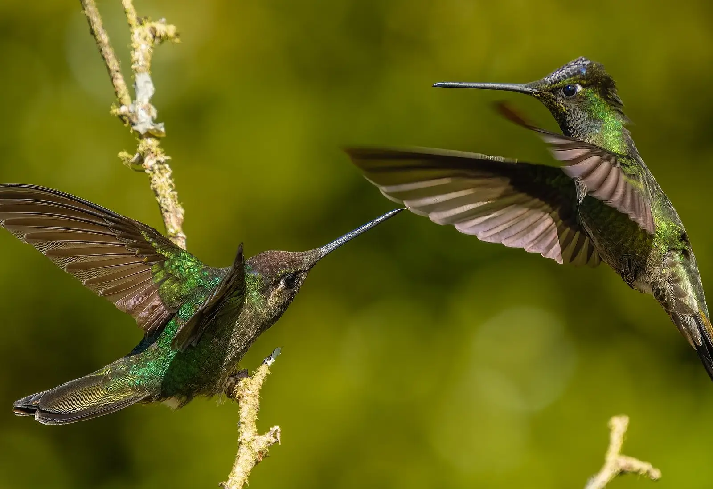

Data
Capital: San José
Official Language: Spanish
Population: 5.2 million
Area: 51,100 km²
Currency: Costa Rican Colón
Time Zone: UTC -6
Calling Code: +506
Famous For: Biodiversity, beaches, volcanoes, and rainforests
Weather
Temperature: 28 °C
Conditions: Partly Cloudy
Wind Speed: 10 km/h
Wind Chill: